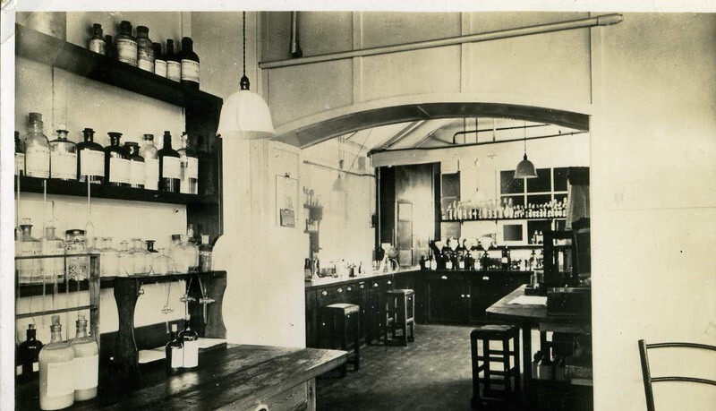

You may often find Hazel lingering about her dingy laboratory frantically searching for missing pieces for her current experiments. Despite the comfort of this place, her surroundings are very noisy due to the outside city scape.Hazel resides in the middle of the city in cobble stone basement of a decrepit building she was able to negotiate for the vast space in order to have space for her inventions and “business transactions”. The weather mimics the temperature of the surface above them, occasionally trailing in behind the interdimensional beings that pass through the city.
